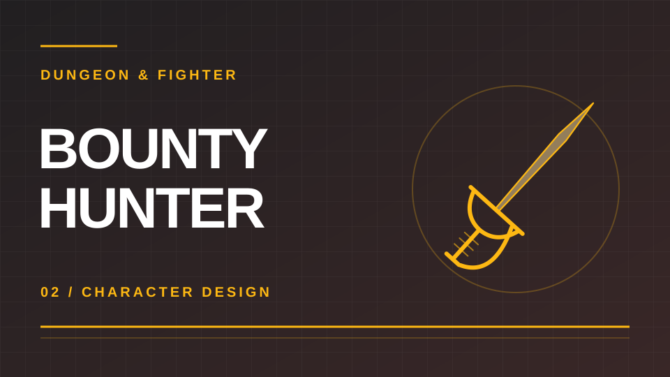

CASE STUDY 02 / PC 던전앤파이터
제국기사 · 바운티헌터 기획서
수배자를 추적하는 레이피어 검사. 스킬을 끝까지 맞힌 뒤 후딜레이를 캔슬해 빠른 연격을 이어가는 전직을 설계했습니다.

- 게임
- PC 던전앤파이터
- 기획 대상
- 제국기사 신규 전직
- 프로젝트 형태
- 개인 창작 기획
- 주 무기
- 레이피어
마지막 타격을 읽고 이어가는 연격
캔슬을 사용하지 않아도 기본 피해를 온전히 줄 수 있습니다. 마지막 타격 직후 다음 스킬로 이어가면 후딜레이를 줄이면서 추가 피해를 노릴 수 있도록 설계했습니다.
상세 기획서
노션의 공유 설정에 따라 열람 권한이 필요할 수 있습니다.